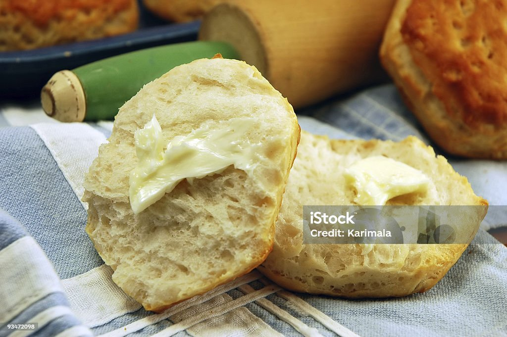

Bolillo con mantequilla

Platillo: Bolillo
Descripcion: Un pedazo de pan llamado bolillo cn mantequilla untada
La verdad se me acabaron las ideas de recetas, asi que disculpa por lo poco creativo
Ingredientes:
- Bolillo
- Mantequilla
- Azucar si hay
- Un cafecito vendria bien
Preparacion:
- Conseguir el bolillo
- Calenarlo en horno de microondas
- Untar la mantequilla
- Calentar de nuevo en el horno de microondas
- Y ya............. Esta listo A comer
- Bueno bueno quizas es mas un snack que un platillo pero bueno.
- Amm quieres cafe.
- Apagas la luz cuando salgas
Home